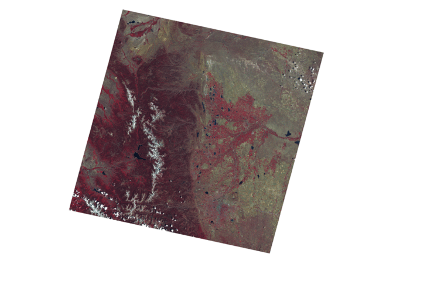
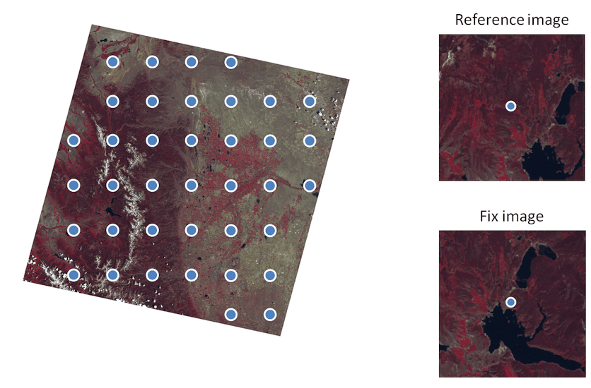
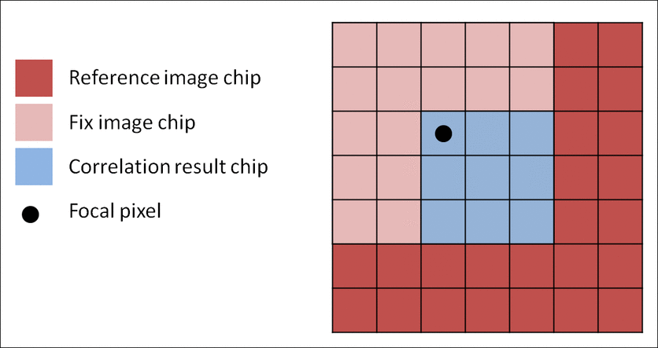

MSSwarp
MSSwarp automatically checks georegistration accuracy of MSS images and attempts to improve images with poor positional RMSE (Figure 1). It looks at image metadata on georegistration found in the *VER.txt file accompanying each MSS LPGS image to determine georegistration accuracy. If the overall scene RMSE is > 0.75, the image is selected for improvement. An image-to-image tie-point search and warping procedure based on Kennedy & Cohen (2003) is conducted. More specifically, a geometric reference image is selected automatically by identifying an MSS image with the lowest percent cloud cover and lowest scene RMSE. The procedure then creates a series of spatially corresponding image subsets for both the geometric reference image and the image being adjusted (Figure 2). For each image subset, the dependent image chip is offset from its original position and slide over the reference image chip in single pixel increments. At each adjusted position the cross correlation coefficient for the overlapping area of the image subsets are calculated (Figure 3). The correlation coefficient matrices are evaluated as surfaces where the best matching position between reference and depended image subsets is the apex of a cone representing radially increasing correlation (Figure 4). The cross correlation surfaces are filtered for noise and prominence of the apex to ensure proper fitting. Further, the x and y coordinates of acceptable surfaces are evaluated for their individual contribution to overall RMSE of all position offsets. Points that disproportionately contribute to overall error are removed. This process iterates until either no points exceed the threshold for acceptable error contribution or until the minimum number of points for the warp model is reached. The remaining points are used in a 2nd order polynomial function (gdalwarp; see System requirements section) to spatially warp the dependent image to more closely align with reference image.

Figure 1. Example of an image with poor georegistration accuracy. Note the offset between the two images, as most evident in the position of the large lake on the western side of the two images. USGS L1T images go through a georegistration process that does a good job of registering images, but high cloud cover, loss or ephemeris data, and poor position recording can decrease position accuracy. The example here is from an L1G image showing an extreme offset for demonstration purposes. Generally, L1T images have a mean RMSE of only half a pixel (30 meters). Above 3/4 of a pixel, MSSwarp is applied to improve positional accuracy.

Figure 2. Representation of MSSwarp image sampling and image subsets. Note the spatial difference between the reference and fix image subset for the same geographic center. MSSwarp attempts to automatically determine the x and y coordinate offsets and spatially shift/warp the fix image to align with the reference image.

Figure 3. Example of the MSSwarp moving window cross correlation analysis for determining the x and y offset between the reference and fix image subset surrounding a sample point. For each position of the fix image chip the cross correlation between the overlapping area of the reference chip and the fix image chip is assigned to the focal pixel in the correlation result chip.

Figure 4. Example cross correlation coefficient surfaces from the MSSwarp moving window analysis. The x-y position of the cone apex represents the x-y offset needed to align a given fix image subset to its reference subset, with the center of the matrix equal to 0, 0. Note the filtering decision on whether to use the point in the warping equation or not; only prominent, well defined peaks are included in the warp model.
Kennedy, R. E., & Cohen, W. B. (2003). Automated designation of tie-points for image-to-image coregistration. International Journal of Remote Sensing, 24(17), 3467-3490.